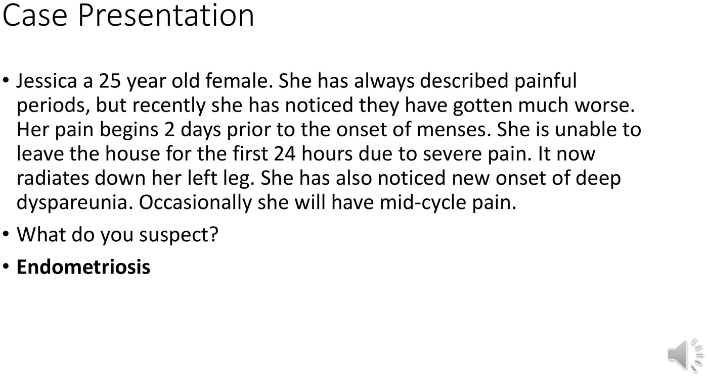
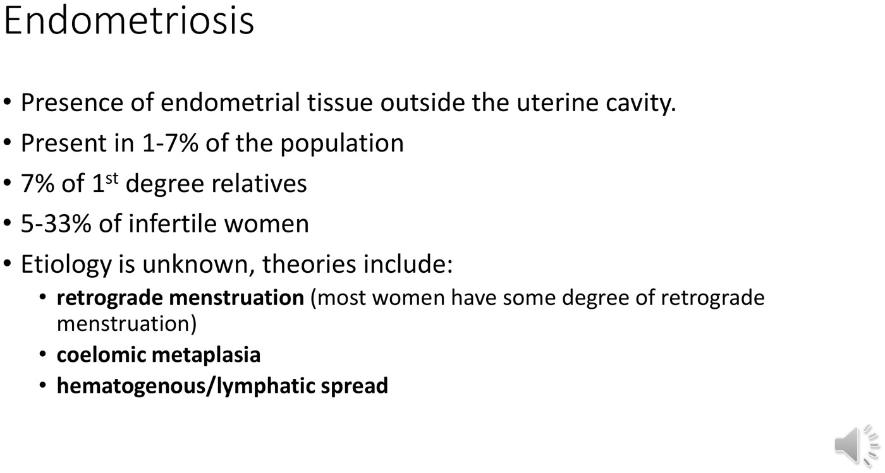
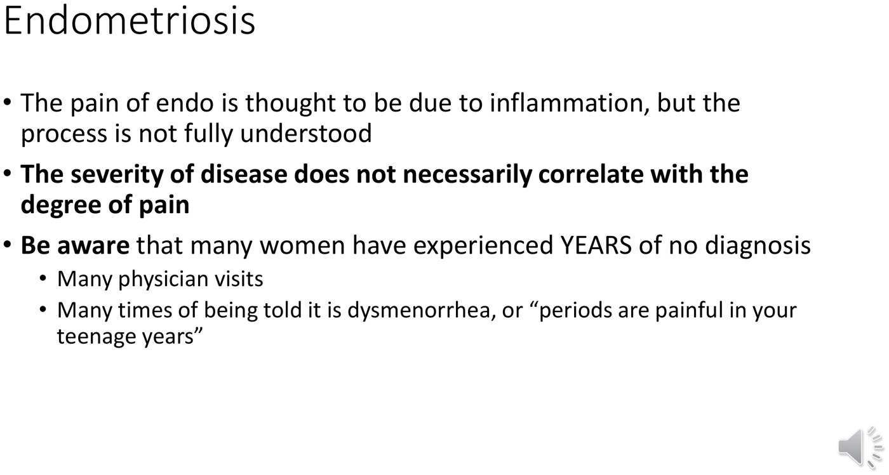
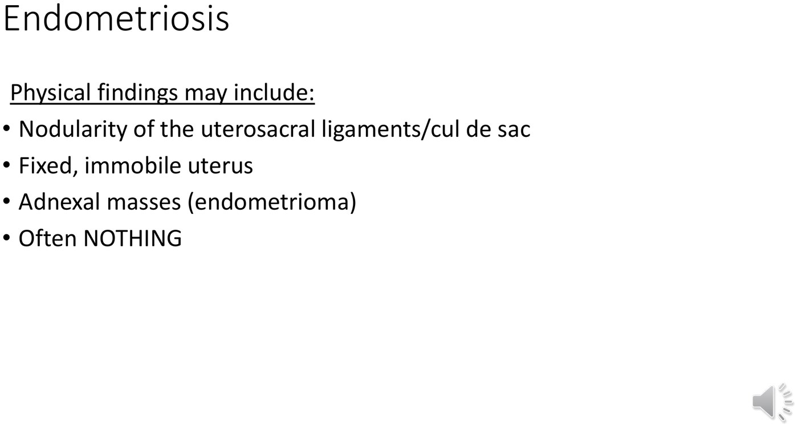
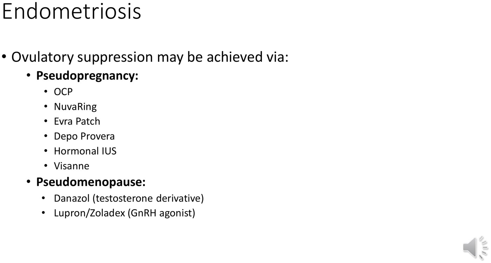
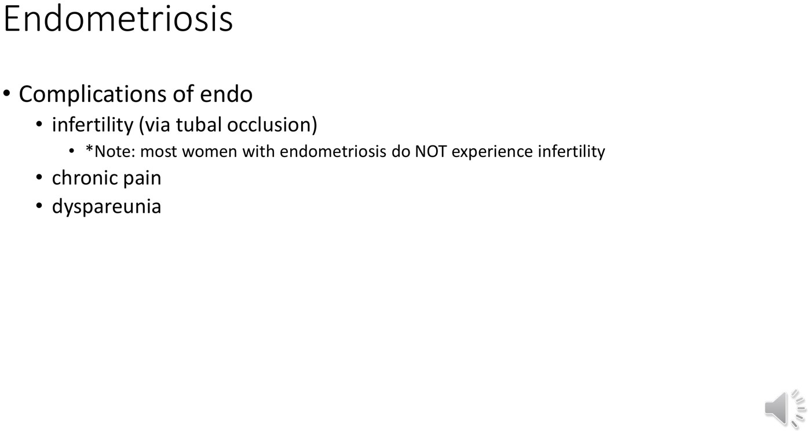
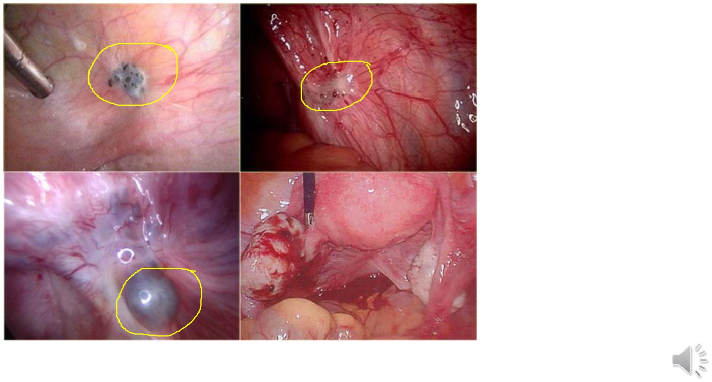
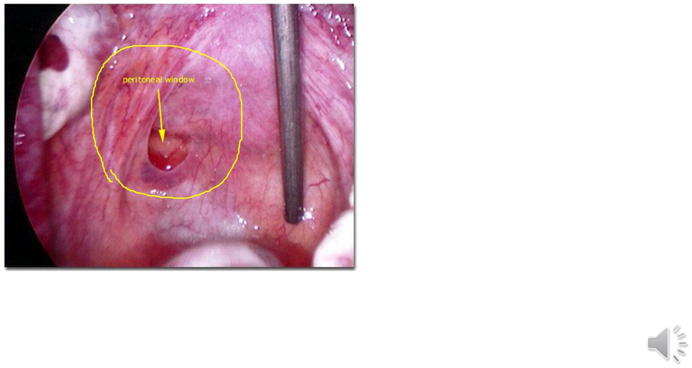
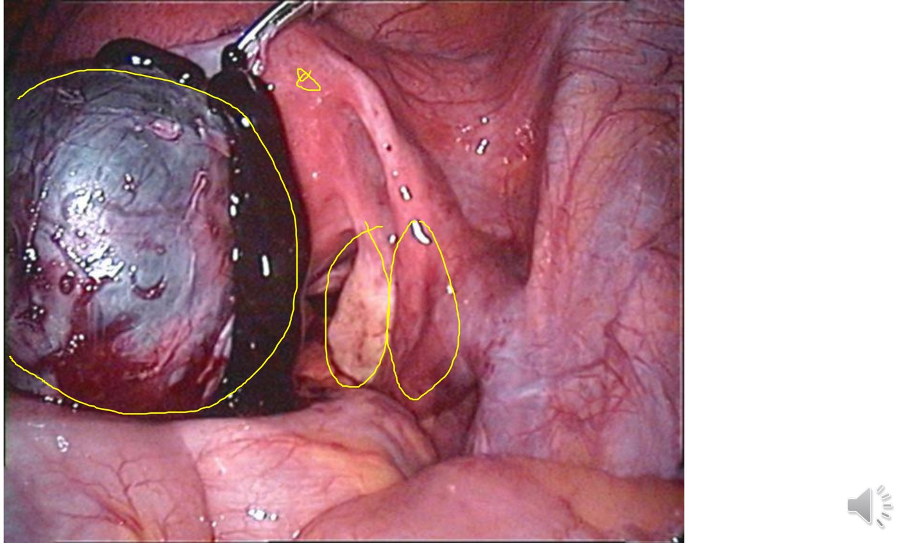

Endometriosis
- The history that separates it from primary dysmenorrhea: pain that starts before the period begins, is worse in those first days, is new or worsening rather than lifelong-and-stable, plus mid-cycle pain and deep dyspareunia.
- Severity of disease does not correlate with degree of pain. A woman can be debilitated with almost nothing on exam; another can have stage IV disease and a frozen pelvis found incidentally during an infertility work-up and feel almost nothing.
- The commonest physical exam finding is no finding at all. Do not let a normal exam talk you out of the diagnosis.
- Most women with endometriosis are NOT infertile. The 5–33% figure runs the other way round — endometriosis is more common among women who are already infertile, because if you go looking in that population you find it.
- Treatment = ovulatory suppression + pain control (NSAIDs). Anything hormonal that thins the endometrium and lightens periods also shrinks the endometriotic lesions.
- Two flavours of suppression: pseudopregnancy (OCP, ring, patch, Depo, hormonal IUS, Visanne) and pseudomenopause (danazol, Lupron/Zoladex), the latter usually second line because of side effects.
- Surgery is not the default. Lesions recur after excision or ablation, and repeated surgery is not recommended — each operation adds surgical risk and more scarring.
- Hysterectomy ± oophorectomy is definitive but last. Not first line, only after other options are exhausted and childbearing is complete — and not an option at all if she wants fertility-sparing treatment, which matters because this is a disease of young women.
- Ask about dyspareunia, because she won't raise it. Dr. Black puts this in red on the slide: many women will not bring up painful intercourse unless prompted.
- Many patients arrive already frustrated after years of being told it's "just" dysmenorrhea or that painful periods are normal for a teenager. That is part of the clinical picture.
Learning Objectives
- Define endometriosis.
- Describe clinical symptoms and physical exam findings.
- Outline an approach to discussion of dyspareunia.
- Apply treatments for endometriosis.
- Describe clinical outcomes of endometriosis.
Dr. Stephanie Black's 15-minute module. She states at the outset that she is not covering the pathology — that is Dr. Weir's 4.12, and the two modules are designed to be read together. This one is purely clinical. Her declared conflict of interest: Bayer advisory board re: intrauterine contraception. She also teaches 4.14 and 4.15, where endometriosis reappears as a cause of chronic pelvic pain.
The Case, and Why It Isn't Primary Dysmenorrhea

Primary dysmenorrhea is prostaglandin-mediated pain that occurs with menstruation. What marks Jessica out is that her pain begins two days before menses and is worst in those two days and the first day after onset. Add mid-cycle pain, which is also common in endometriosis, and the picture shifts. Two more red flags in the history: the pain is new and worsening against a background of lifelong painful periods, and it radiates down her leg, which points to disease involving or irritating structures beyond the uterus.
| Primary dysmenorrhea | Endometriosis | |
|---|---|---|
| Timing of pain | With menstruation | Starts before menses; worst in the first 24–48 h |
| Mechanism | Prostaglandin-mediated | Inflammation (incompletely understood) |
| Course | Stable; typically declines with age | New or progressively worsening |
| Mid-cycle pain | No | Common |
| Deep dyspareunia | No | Common |
Definition and Epidemiology

- 1–7% of the population.
- 7% of first-degree relatives will report a family member with it — there is a familial component worth asking about.
- 5–33% of infertile women — see the box below, because this number is routinely misread.
Her own objection, and it is a good piece of reasoning to be able to reproduce: most women have some degree of retrograde menstruation with every cycle, and most women do not have endometriosis. So the theory is not sufficient on its own — something about the host must permit the refluxed tissue to implant, establish a supply and keep cycling. And retrograde flow cannot explain disease above the diaphragm at all, which is what haematogenous or lymphatic spread is there to account for. Coelomic metaplasia — peritoneal cells converting to endometrial tissue — is the third theory.
Where It Is Found
Commonly in the pelvis: around the rectosigmoid colon, in the cul-de-sac (between uterus and rectum), on the bladder flap, in the ovarian fossa, and on the uterosacral ligaments. But she is clear it can be almost anywhere — including the diaphragm, and rarely the lungs.
Her striking example: in rare cases with endometriosis in the lung, a woman can collapse a lung with every period. This is real and has a name — catamenial pneumothorax, defined as a spontaneous, recurrent pneumothorax occurring from 24 hours before to 72 hours after the onset of menstruation. It is the commonest manifestation of thoracic endometriosis syndrome, and accounts for up to ~25% of spontaneous pneumothoraces in women who go to surgery, with thoracic endometriosis pathologically proven in about 65% of those cases. It is characteristically right-sided, and the proposed reason is elegant: refluxed endometrial cells track up the right paracolic gutter to the subdiaphragmatic space, with the hepatic ligaments acting as a barrier on that side, then air passes through congenital diaphragmatic fenestrations or defects created by the implants. Other manifestations of the syndrome: catamenial haemothorax, catamenial haemoptysis, catamenial chest pain, pulmonary nodules, diaphragmatic hernia.
Not on the slides — checked against the AME Surgical Journal literature review of thoracic endometriosis syndrome and a PMC case review of catamenial pneumothorax.
Pain, Severity, and the Diagnostic Delay

Direction one: a patient with debilitating pain affecting her quality of life, her productivity at work or school and her relationships, who has very little clinical disease on examination. Direction two: a woman investigated for infertility who is found to have stage IV endometriosis with a frozen pelvis and disease everywhere — with no or very little pain. Neither the exam nor the imaging tells you how much she hurts, so the pain has to be taken at face value.
And the corollary she wants you to carry: many of these women have already seen several physicians and been told it is normal. They are frustrated by the time they get a diagnosis. Treating "just dysmenorrhea" as a safe default is how that happens.
Approaching Dyspareunia
Objective 3, and the part of this lecture that generalizes furthest beyond endometriosis.
![Slide titled Dyspareunia. In red: many women will not bring up painful intercourse unless prompted by their health care provider. Maintain a non-judgmental and normalizing approach. Questions such as: Have you ever had penetrative sexual activity? If yes, do you experience pain with sexual activity? Can be asked on an intake questionnaire. Dyspareunia has many etiologies, and deep versus superficial pain helps to differentiate causes: is there pain with penetration, for example vulvodynia, atrophy, vulvar skin conditions, vaginismus; is there deep pain, for example endometriosis, masses, adhesions, MSK causes.](../../../../assets/images/week-4/endometriosis/dyspareunia.jpg)
| Type | Where it hurts | Think about |
|---|---|---|
| Superficial | Pain with penetration, at the entrance | VulvodyniaChronic vulvar pain without an identifiable cause on examination. · atrophy · vulvar skin conditions (see 4.11 — lichen sclerosus and lichen planus both cause dyspareunia) · vaginismusInvoluntary reflex spasm of the pelvic floor muscles on attempted penetration. |
| Deep | Pain on deep penetration | Endometriosis · masses · adhesions · musculoskeletal causes |
Physical Findings

- Nodularity of the uterosacral ligaments or cul-de-sac — palpable nodules or plaque-like structures. This is the same finding Dr. Weir's case had in the rectovaginal septum.
- A fixed, immobile uterus in severe cases — tethered by adhesions.
- Adnexal masses — an endometrioma, a collection of old blood within the ovary itself.
- Often nothing. Her words: the most common exam finding in endometriosis is no finding at all.
Treatment
![Slide titled Endometriosis - treatment: the mainstay of treatment for endo is ovulatory suppression and pain control with NSAIDs. Endometriotic lesions may be excised or ablated at laparoscopy - do not recommend repeated surgery due to surgical risk; often reserved for diagnosis, infertility treatment and optimization, and when refractory to medical management and desiring fertility preservation. Definitive management would include hysterectomy with or without oophorectomy - not first line, not an option if requiring fertility sparing treatment.](../../../../assets/images/week-4/endometriosis/treatment.jpg)
The logic is one sentence: anything hormonal that suppresses ovulation and thins the endometrium, lightening menstrual periods, also suppresses the growth of the endometriotic lesions — because those lesions are endometrial tissue responding to the same hormones. So the drugs used are largely the contraceptives, prescribed for their non-contraceptive benefit. That is the same principle Dr. Arntfield applies to AUB in 4.10.

| Strategy | Agents | Notes |
|---|---|---|
| Pseudopregnancy first line | OCP · NuvaRing · Evra patch · Depo-Provera · hormonal IUS · Visanne | Visanne (dienogest) is a progestin-only pill specifically targeted at endometriosis — the same agent that appears on the AUB slide in 4.10 |
| Pseudomenopause usually second line | Danazol — a testosterone derivative Lupron / Zoladex — injectable GnRH agonists, monthly or 3-monthly | Very effective, but danazol's testosterone-like side effects are sometimes intolerable, and GnRH agonists produce a menopausal state. Hence second line despite the efficacy |
She mentions in passing an oral agent for pseudomenopause — Orilissa (elagolix). Worth getting the class right, because it differs from Lupron and Zoladex: elagolix is an oral, non-peptide GnRH antagonist, not an agonist. It produces dose-dependent estrogen suppression — partial at lower doses, nearly complete at higher ones — which is the practical advantage: you can titrate how much of a menopausal state you induce, and being an antagonist it does not cause the initial gonadotropin flare an agonist does. It is approved for moderate-to-severe endometriosis-associated pain, and bone mineral density loss is the dose- and duration-limiting concern, which is why the labelled durations are capped.
Not on the deck. The drug class and the dose-dependent suppression mechanism are confirmed from the PubMed-indexed clinical evaluation of elagolix; the specific labelled regimens (150 mg once daily, up to 24 months; 200 mg twice daily, up to 6 months) come from secondary review sources rather than a primary document I could open, so treat the numbers as lower-confidence than the class.
Where Surgery Fits
- Lesions can be excised or ablated at laparoscopy — sometimes with a CO2 laser to laser away the deposits.
- But lesions come back after surgery, on a timeline that varies from patient to patient.
- Repeated surgery is not recommended — each operation adds surgical risk and lays down more scarring, which is itself a cause of pain and infertility.
- So surgery is reserved for: making the diagnosis; infertility treatment and optimization; and disease refractory to medical management in someone who wants fertility preservation without hormonal suppression.
- Hysterectomy ± oophorectomy is definitive but explicitly not first line — only after other modalities are exhausted and childbearing is complete. And it is not an option for someone requesting fertility-sparing treatment, which she notes matters a great deal because this disease predominantly affects young women.
Complications — and the Infertility Statistic Everyone Misreads

The slide says endometriosis is present in 5–33% of infertile women, which is easy to turn into "endometriosis causes infertility a third of the time." Her correction is explicit: endometriosis does not necessarily cause infertility — it is more common in women who are already infertile. Most women with endometriosis conceive without difficulty. The statistic is a product of where you look: take an already-infertile population, go looking for endometriosis, and you will find it more often than in the general population. When it does cause infertility, the mechanism is tubal occlusion from scarring.
Worth holding this next to 4.12, where Dr. Weir gives infertility in 30–40% of endometriosis and names it as one of the three lesions associated with infertility. The two are not in conflict — Dr. Weir is describing surgical/pathology specimens, i.e. women with disease severe enough to be resected, whereas Dr. Black is describing the whole clinical population including mild and asymptomatic disease. If asked for a number, give the source's number; if asked to counsel a newly diagnosed patient, Dr. Black's framing is the honest one.
The more common complications, in her ranking: chronic pain and dyspareunia — with the reminder attached that patients will not volunteer the second one.
What It Looks Like at Laparoscopy

She adds one that isn't on the slide: endometriosis can appear vesicular, and this is more common in younger women. A young patient may have only clear vesicles, with none of the classic powder-burn or pigmented findings. So an operator expecting powder burns can look at a pelvis full of disease in a 20-year-old and call it normal. Pair this with "severity doesn't correlate with pain" and you have the two reasons this diagnosis gets missed.

A peritoneal window in the cul-de-sac — a pseudo-opening that does not extend deep into the peritoneum. Orientation: uterus anteriorly (above), rectum posteriorly (below), the patient's left ovary to the side.
An endometrioma — this dark cystic structure taking up the entire left ovary. The leaking material is old blood and endometriosis tissue, with the consistency of chocolate fondue, which is where "chocolate cyst" comes from. The right ovary is completely normal.Any one of these appearances is diagnostic of endometriosis — the appearance is classic enough to make the call in the operating room. For a definitive diagnosis, any of them can be excised and sent to pathology, which is where 4.12's "any 2 of 3 features" rule takes over. Note the consequence of pairing the two lectures: a visual diagnosis is available at laparoscopy, but a histological one may fail in long-standing burned-out disease that no longer contains endometrial tissue.
Built from Dr. Stephanie Black's "Endometriosis" module (15 min): the recorded lecture and its 14-slide deck. All figures are slides from that deck; the laparoscopic photographs are operative images with no identifying features. The auto-transcript has the usual caption damage and was checked against the slides throughout — it renders endometriosis as "and Demetrius," "enemy neurosis," "enemy truces," "enemy trolls," "enemy traces," "the new Metro says," "any metro system" and "endometrium CIS," dyspareunia as "just pernia," NSAIDs as "insets," coelomic metaplasia as "So Lomac met a player," haematogenous as "hematite penis," Visanne as "Besan," danazol as "Dan this all," Zoladex as "XL Addax," GnRH as "generated," Orilissa as "or Lisa or a Alex," hemosiderin as "he must sit," catamenial as "ketamine," and musculoskeletal as "MSA." Two items were verified outside the deck and are flagged where they appear: catamenial pneumothorax — its definition, laterality and the right-paracolic-gutter explanation — from the AME Surgical Journal review of thoracic endometriosis syndrome plus a PMC case review; and elagolix's drug class, confirmed as an oral non-peptide GnRH antagonist from the PubMed-indexed clinical evaluation, with its dosing regimens marked as lower-confidence because only secondary sources were reachable. Related pages: 4.12 for the pathology deliberately excluded here, 4.14 where endometriosis returns as a cause of chronic pelvic pain, 4.11 for the superficial dyspareunia differential, 4.10 and 4.4 for the hormonal agents, and 4.2 for the infertility work-up.